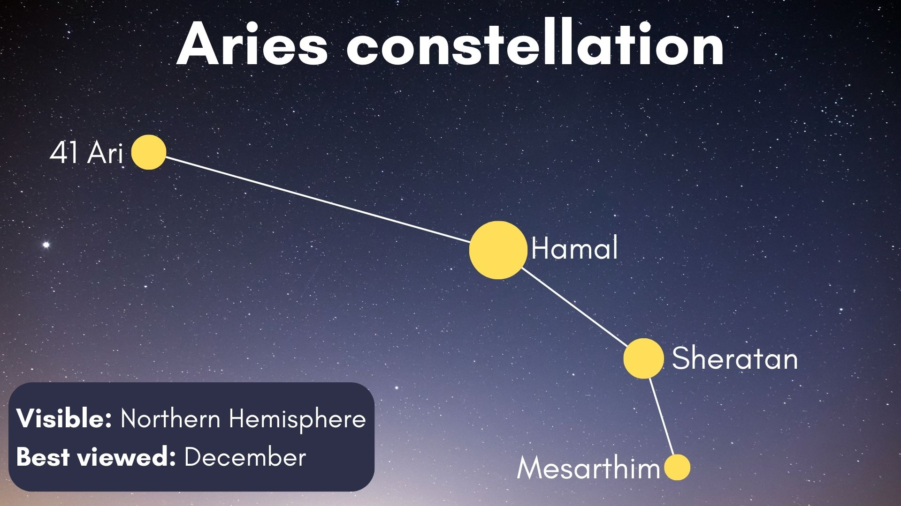
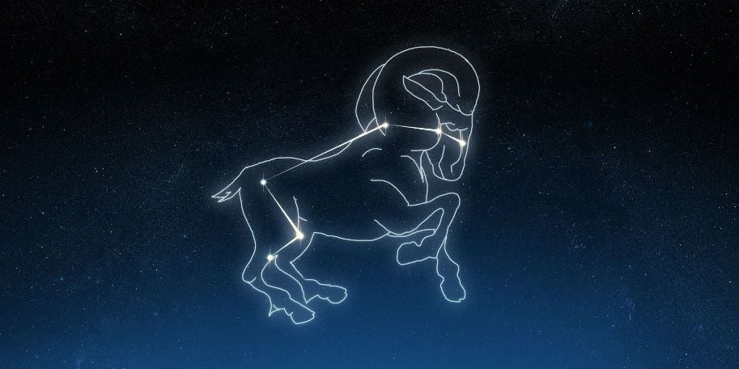

Aries (Constellation)
► According to the tropical system of astrology, the Sun enters the sign of Aries when it reaches the March equinox, typically on March 21. Because the Earth takes approximately 365.24 days to go around the Sun, the precise time of the equinox is not the same each year, and generally will occur about six hours later from one year to the next until reset by a leap year. The leap day February 29 causes that year's March equinox to fall about eighteen hours earlier compared with the previous year. ◄
► Aries is one of the constellations of the zodiac. It is located in the Northern celestial hemisphere between Pisces to the west and Taurus to the east. ◄

